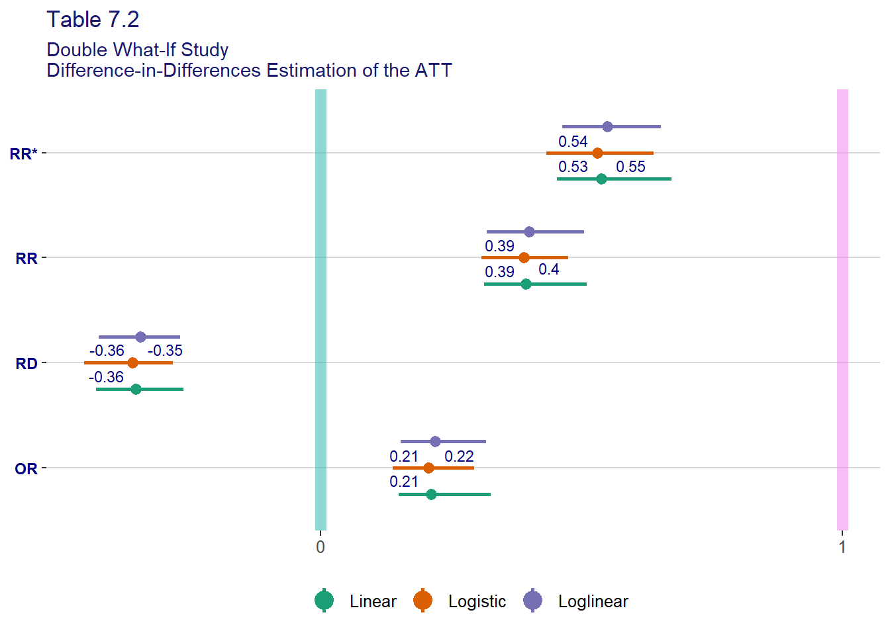

Chapter 7 Difference-in-Differences Estimators
library(dplyr)
library(fciR)
options(dplyr.summarise.inform = FALSE)7.1 Difference-in-Differences (DiD) Estimators
7.1.1 DiD Estimator with a Linear Model
The method relies on consistency as well as assumption A1:
\[ \begin{align*} &E(Y_1(0) \mid A=1) - E(Y_1(0) \mid A=1) = \\ &E(Y_0(0) \mid A=1) - E(Y_0(0) \mid A=1) \end{align*} \]
That assumption is interpreted as : If assume that no treatment was applied in “year” 1 (nothing happened in year 1) than we have the same results as in the base “year.”
also called additive equi-confounding […]. The target of estimation is the linear ATT presented in chapter 6 as a risk difference
\[ \text{Linear ATT:} \: E(Y_1(1) - Y_1(0) \mid A=1) \] which is interpreted as *what is the the average difference between \(Y_1(1)\) and \(Y_1(0)\) if they all treated. For the example of the bank’s NIM, what is the average difference between the banks’ NIM in NIRP ad non-NIRP economy assuming they are all subjected to the NIRP policy, that is wihout the impact of the NIRP policy.
and we have
\[ \begin{align*} & E(Y_1(1) - Y_1(0)) \mid A=1) = \\ & E(Y_1(1) \mid A=1) - E(Y_1(0) \mid A=1) = \\ & [E(Y_1(1) \mid A=1) - E(Y_1(0) \mid A=1)] - [E(Y_1(0) \mid A=0) - E(Y_1(0) \mid A=0)] = \\ & [E(Y_1(1) \mid A=1) - E(Y_1(0) \mid A=0)] - [E(Y_1(0) \mid A=1) - E(Y_1(0) \mid A=0)] = \\ &\text{consistency assumption} \\ & [E(Y_1 \mid A=1) - E(Y_1 \mid A=0)] - [E(Y_1(0) \mid A=1) - E(Y_1(0) \mid A=0)] = \\ &\text{assumption A1, additive equi-confounding} \\ &\text{i.e. assuming that if nothing happens in year 1, then we can use the results of year 0} \\ & [E(Y_1 \mid A=1) - E(Y_1 \mid A=0)] - [E(Y_0 \mid A=1) - E(Y_0 \mid A=0)] \end{align*} \]
we can therefore estimate the linear ATT via the difference in differences of averages
\[ \begin{align*} &[\hat{E}(Y_1 \mid A=1) - \hat{E}(Y_1 \mid A=0)] - [\hat{E}(Y_0 \mid A=1) - \hat{E}(Y_0 \mid A=0)]= \\ &[\hat{E}(Y_1 \mid A=1) - \hat{E}(Y_0 \mid A=1)] - [\hat{E}(Y_1 \mid A=0) - \hat{E}(Y_0 \mid A=0)]= \\ &[\hat{E}(Y_1 - Y_0 \mid A=1)] - [\hat{E}(Y_1 - Y_0 \mid A=0)] \end{align*} \]
We can also compute the DiD via the linear model
\[ E(Y_t \mid A) = \alpha_0 + \alpha_1 t + \alpha_2 A + \beta A * t \] and therefore
\[ \begin{align*} \beta &= [E(Y_1 \mid A=1) - E(Y_0 \mid A=1)] - [E(Y_1 \mid A=0) - E(Y_0 \mid A=0)] \\ &= (\alpha_0 + \alpha_1 + \alpha_2 + \beta) - (\alpha_0 + \alpha_2) - ((\alpha_0 + \alpha_2) - (\alpha_0)) \end{align*} \]
As we can estimate \(E(Y(1) \mid A=1)\) directly via \(E(Y_1 \mid A=1)\), we can also recover \(E(Y(0) \mid A=1)\) via \(E(Y_1 \mid A=1) - \beta\)
because from above we have
\[ \begin{align*} \beta &= E(Y_1(1) - Y_1(0)) \mid A=1) \\ &= E(Y_1(1) \mid A=1) - E(Y_1(0) \mid A=1) \\ &= E(Y_1 \mid A=1) - E(Y_1(0) \mid A=1) \\ &\therefore \\ E(Y_1(0) \mid A=1)& = E(Y_1 \mid A=1) - \beta \end{align*} \]
7.1.2 DiD Estimator with a Loglinear Model
The method relies on consistency as well as assumption A2:
\[ \begin{align*} \frac{E(Y_1(0) \mid A=1)}{E(Y_1(0) \mid A=1)} = \frac{E(Y_0(0) \mid A=1)}{E(Y_0(0) \mid A=1)} \end{align*} \]
7.1.3 DiD Estimator with a Logistic Model
The method relies on consistency as well as assumption A3:
\[ \begin{align*} logit(E(Y_1(0) \mid A=1)) - logit(E(Y_1(0) \mid A=1)) = logit(E(Y_0(0) \mid A=1)) - logit(E(Y_0(0) \mid A=1)) \end{align*} \]
7.2 Comparison with Standardization
The functions used for DID estimations are fciR::did_linear(),
fciR::did_loglinear and fciR::logistic.
7.2.1 doublewhatifdat
The DiD estimator with the linear model
dwhatif.lindid <- fciR::boot_est(
doublewhatifdat, fciR::did_linear, R = 100, conf = 0.95, outcome.name = "VL1",
exposure.name = "A", confound.names = "VL0")
# dwhatif.lindidThe DiD estimator with the loglinear model
dwhatif.loglindid <- fciR::boot_est(
doublewhatifdat, fciR::did_loglinear, R = 100, conf = 0.95, outcome.name = "VL1",
exposure.name = "A", confound.names = "VL0")
# dwhatif.loglindidThe DiD estimator with the logistic model
dwhatif.logisticdid <- fciR::boot_est(
doublewhatifdat, fciR::did_logistic, R = 100, conf = 0.95, outcome.name = "VL1",
exposure.name = "A", confound.names = "VL0")
# dwhatif.logisticdidverify the results
data("fci_tbl_07_02", package = "fciR")
bb_dwhatif <- fci_tbl_07_02
# bb_dwhatifgt_measures_rowgrp(
bb_dwhatif,
rowgroup = "name",
rowname = "method",
conf = 0.95,
title = "Table 7.2",
subtitle = "Double What-If Study<br>Difference-in-Differences Estimation of the ATT"
)| Table 7.2 | |||
|---|---|---|---|
| Double What-If Study Difference-in-Differences Estimation of the ATT |
|||
| Truth | Estimate | CI1 | |
| E(VL1|A=1) | |||
| All | 0.199 | 0.231 | (0.179, 0.282) |
| EY0A1 | |||
| Linear | 0.559 | 0.586 | (0.508, 0.664) |
| Loglinear | 0.559 | 0.577 | (0.498, 0.656) |
| Logistic | 0.559 | 0.592 | (0.513, 0.671) |
| RD | |||
| Linear | -0.360 | -0.355 | (-0.441, -0.27) |
| Loglinear | -0.360 | -0.346 | (-0.431, -0.262) |
| Logistic | -0.360 | -0.362 | (-0.447, -0.276) |
| RR | |||
| Linear | 0.356 | 0.394 | (0.309, 0.5) |
| Loglinear | 0.356 | 0.400 | (0.315, 0.508) |
| Logistic | 0.356 | 0.390 | (0.306, 0.496) |
| OR | |||
| Linear | 0.196 | 0.212 | (0.142, 0.315) |
| Loglinear | 0.196 | 0.220 | (0.149, 0.325) |
| Logistic | 0.196 | 0.206 | (0.139, 0.307) |
| Fundamentals of Causal Inference, Babette A. Brumback, 2022 | |||
|
1
95% confidence interval
|
|||
and the results using the fciR package are identical.
tbl_7.2 <- rbind(
data.frame(
method = "Linear",
dwhatif.lindid),
data.frame(
method = "Loglinear",
dwhatif.loglindid),
data.frame(
method = "Logistic",
dwhatif.logisticdid))
gt_measures_rowgrp(tbl_7.2,
rowgroup = "name",
rowname = "method",
conf = 0.95,
title = "Table 7.2<em>(by FL)</em>",
subtitle = "Double What-If Study<br>Difference-in-Differences Estimation of the ATT"
)| Table 7.2(by FL) | ||
|---|---|---|
| Double What-If Study Difference-in-Differences Estimation of the ATT |
||
| Estimate | CI1 | |
| EY0A1 | ||
| Linear | 0.586 | (0.493, 0.66) |
| Loglinear | 0.577 | (0.504, 0.654) |
| Logistic | 0.592 | (0.516, 0.675) |
| EY1 | ||
| Linear | 0.231 | (0.17, 0.288) |
| Loglinear | 0.231 | (0.179, 0.284) |
| Logistic | 0.231 | (0.183, 0.271) |
| RD | ||
| Linear | -0.355 | (-0.431, -0.264) |
| Loglinear | -0.346 | (-0.426, -0.27) |
| Logistic | -0.362 | (-0.453, -0.284) |
| RR | ||
| Linear | 0.394 | (0.314, 0.51) |
| Loglinear | 0.400 | (0.318, 0.505) |
| Logistic | 0.390 | (0.308, 0.474) |
| RR* | ||
| Linear | 0.538 | (0.453, 0.673) |
| Loglinear | 0.550 | (0.463, 0.652) |
| Logistic | 0.530 | (0.433, 0.638) |
| OR | ||
| Linear | 0.212 | (0.15, 0.325) |
| Loglinear | 0.220 | (0.153, 0.317) |
| Logistic | 0.206 | (0.137, 0.294) |
| Fundamentals of Causal Inference, Babette A. Brumback, 2022 | ||
|
1
95% confidence interval
|
||
fciR::ggp_measures_groups(tbl_7.2, title = "Table 7.2",
subtitle = "Double What-If Study\nDifference-in-Differences Estimation of the ATT")